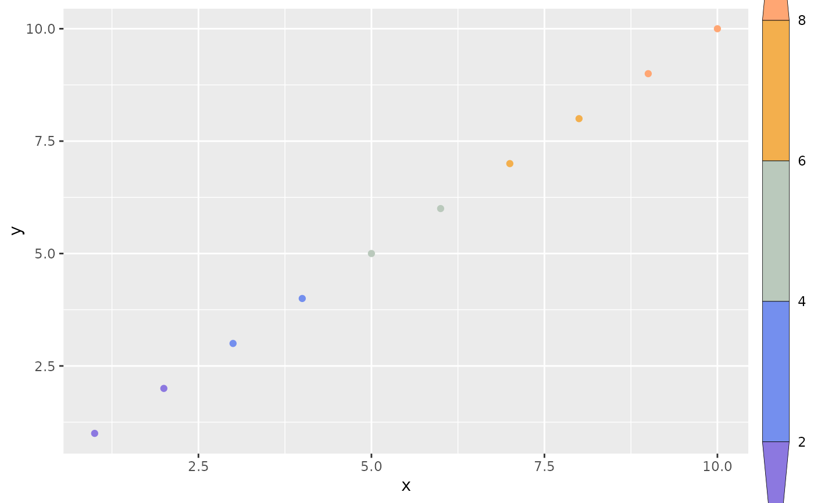
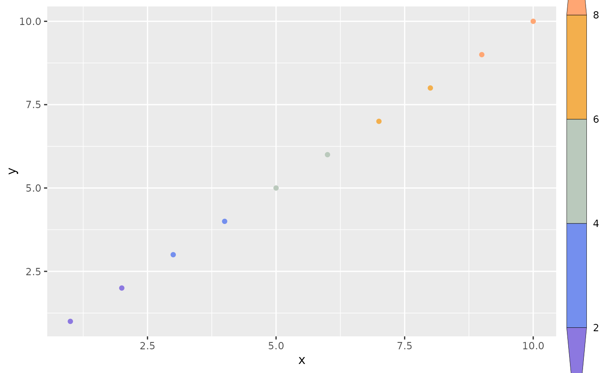

stat_cut
stat_cut.Rdstat_cut
stat_cut(
mapping = NULL,
data = NULL,
geom = "point",
position = "identity",
...,
breaks = NULL,
include.lowest = FALSE,
na.rm = FALSE,
show.legend = NA,
inherit.aes = TRUE
)
StatCutFormat
An object of class StatCut (inherits from StatIdentity, Stat, ggproto, gg) of length 6.
Examples
library(rcolors)
library(ggplot2)
library(magrittr)
df = data.frame(x = 1:10, y = 1:10, z = 1:10)
brks <- c(2, 4, 6, 8) %>% c(-Inf, ., Inf) # 这里要包含
nbrk <- length(brks) - 1
cols = get_color(rcolors$amwg256, nbrk)
ggplot(df, aes(x, y, z = x)) +
stat_cut(aes(color = after_stat(level)), breaks = brks, geom = "point") +
scale_color_manual(
values = cols,
guide = guide_coloursteps2(title = "lgd", barheight = unit(0.8, "npc"))
)
 ## another option: use `scale_color_stepsn`
# example 2
# ! unable to accurately control the used colors
ggplot(df, aes(x, y, color = x)) +
geom_point() +
scale_color_stepsn(
colors = cols,
breaks = brks,
guide = guide_coloursteps2(title = "lgd")
) +
theme(
legend.title = element_blank(),
legend.margin = margin(l = -2)
)

# example 3
df <- expand.grid(X1 = 1:10, X2 = 1:10)
df$value <- df$X1 * df$X2
brks = c(10, 15, 25, 50)
nbrk <- length(brks) + 1
cols = get_color(rcolors$amwg256, nbrk)
# This can be changed with the `even.steps` argument
ggplot(df, aes(X1, X2)) +
geom_tile(aes(fill = value)) +
scale_fill_stepsn(
colors = cols, breaks = brks,
guide = guide_colorsteps2()
) +
theme(
legend.title = element_blank(),
legend.margin = margin(l = -2)
)
## another option: use `scale_color_stepsn`
# example 2
# ! unable to accurately control the used colors
ggplot(df, aes(x, y, color = x)) +
geom_point() +
scale_color_stepsn(
colors = cols,
breaks = brks,
guide = guide_coloursteps2(title = "lgd")
) +
theme(
legend.title = element_blank(),
legend.margin = margin(l = -2)
)

# example 3
df <- expand.grid(X1 = 1:10, X2 = 1:10)
df$value <- df$X1 * df$X2
brks = c(10, 15, 25, 50)
nbrk <- length(brks) + 1
cols = get_color(rcolors$amwg256, nbrk)
# This can be changed with the `even.steps` argument
ggplot(df, aes(X1, X2)) +
geom_tile(aes(fill = value)) +
scale_fill_stepsn(
colors = cols, breaks = brks,
guide = guide_colorsteps2()
) +
theme(
legend.title = element_blank(),
legend.margin = margin(l = -2)
)